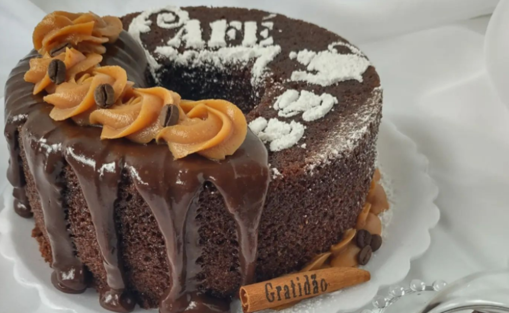
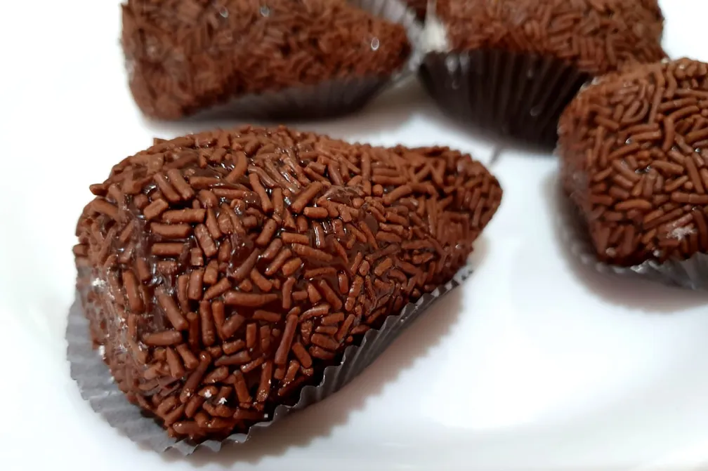

ARROZ DE COUVE-FLOR
- Arroz
- Couve-flor
- Cebola média
- Azeite
Deixe a couve-flor pica. Adicine os ingredientes e refogue bem. Adicione sal, tampe a panela e deixe conzinhar.
BOLO DE CAFÉ
- Farinha de trigo
- Açucar
- Café coado
- Chocolate em pó
- Ovos
Bate o açucar, as gemas e o café. Adicione farinha e chocolate e mexa bem. Bata as claras e junte à mistura.
COXINHA DE BRIGADEIRO
- Leite condensado
- Chocolate em pó
- Manteiga
- Morango
- Chocolate granulado
Junte o leito condensado, chocolate em pó e manteiga. Aqueça no fogo baixa. Envolva os morangos e passe no granulado.